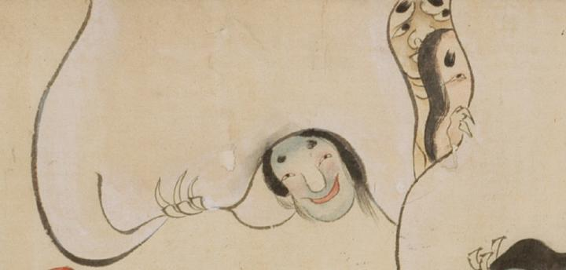

青白い顔をした女官の化物。帳の隙間から、お歯黒をする宮廷女房の様子をうかがっている。いずれの女官も手足には鋭い爪がついている。
出典：親書誌：U426_nichibunken_0054：百鬼夜行絵巻；ヒャッキヤギョウエマキ／日付：2006／資源識別子：U426_nichibunken_0054_0002_0003
Copyright (c)2010- International Research Center for Japanese Studies, Kyoto, Japan. All rights reserved.